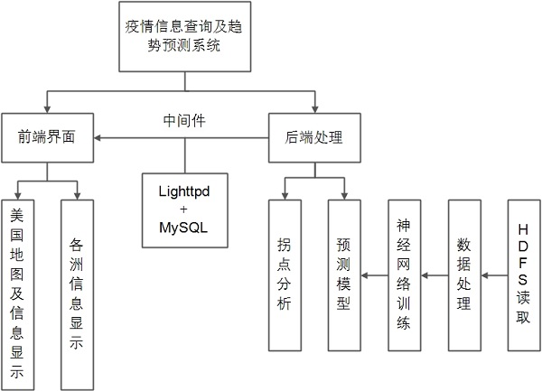
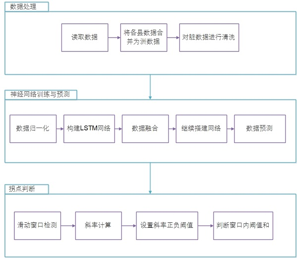
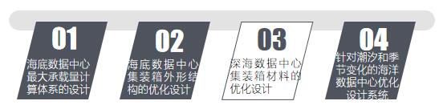
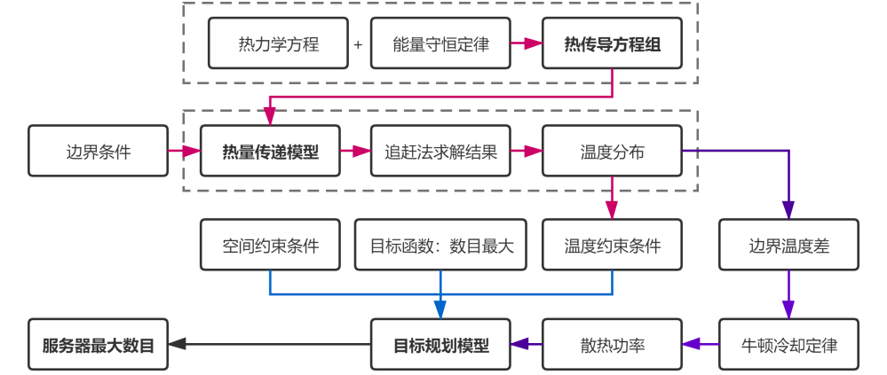
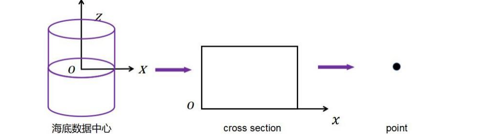
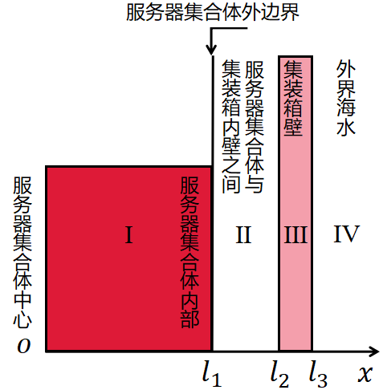

用户场景
-
随着国际新冠病毒感染人数不断增加，国内防疫压力不断增大，并且随着秋冬季节的来临，国内也不断有地区出现或零星或聚集性病例。
目前查找密接人员的工作主要还是靠大数据筛查和各单位登记筛查是否有密接人员。此查询系统能充分发挥群众的自主能动性，每个人都可以使用该自查系统，输入地点等信息，通过结果确认地点是否有疫情信息，起到一个防范的作用
需求规定
-
在网页上，利用数据库和Python等工具，利用现有的软件，配置一定的硬件，开发一个具有开放体系结构、易扩充的、易维护的、具有良好人机交互的疫情信息展示及预测系统；
实现用户能够清晰查看美国地图及其各项指标
目标
-
给定某个国家的疫情数据，将数据存放到HDFS的某个文件夹，再通过数据分析框架出来截止日期确诊人数和死亡人数、某国各州的确诊人数和死亡人数、确诊人数最多的州、死亡人数最多的州。
使用合理的算法计算疫情拐点出现的日期,将分析出来的数据通过Sqoop导出到MySQL,搭建Web项目，将数据显示到地图图表上，实现疫情信息展示系统及预测系统
架构图
- 
-
-
总体可分为前端界面和后端处理两大部分，其中，前端界面目前是展示美国地图并显示各洲的基本信息，
包括出生率，死亡率，疫苗接种率和阳性率，并可以通过点击链接查看美国各洲的近期确诊率变化与拐点
-
后端数据是将处理好的数据上传至HDFS，在进行模型训练时，从节点读取数据，并利用了LSTM训练完毕的模型进行数据预测，将预测后的数据上传到数据库；最后，利用数据库中的数据进行分析得出拐点，并搭建前端界面
流程图
- 
-
研制背景及意义
-
据统计，全球数据中心每年消耗的电量，占全球总电量的2%左右，
而其中能源消耗的成本占整个IT行业的30%-50%，特别是电子器件散热所需消耗的能量占比极大。
目前，国内大数据中心主要建设在内陆地区，预计2020年大数据中心年经济体量超过3000亿元。
但大数据中心建设在陆地上需要占用大量土地，冷却时需要消耗大量的电能和冷却水资源，并花费大量建设成本。
由于沿海发达省市数据中心增长迅猛，类似的资源矛盾尤为突出。
-
海洋数据中心是将服务器等互联网设施安装在带有先进冷却功能的海底密闭的压力容器中，用海底复合缆供电并将数据回传至互联网；
海底数据中心通过与海水进行热交换，利用巨量流动海水对互联网设施进行散热，有效节约了能源。
海底数据中心对岸上土地占用极少，没有冷却塔，无需淡水消耗，
既可以包容海洋牧场、渔业网箱等生态类活动，又可与海上风电、海上石油平台等工业类活动互相服务。
将数据中心部署在沿海城市的附近水域可以极大地缩短数据与用户的距离，不仅无需占用陆上资源，还能节约能源消耗，
是完全绿色可持续发展的大数据中心解决方案
-
而对于海底数据中心，如何在有限的体积内存放更多的服务器且保证服务器工作过程中向海水中正常快速的散热是一项非常有挑战性的问题
研究思路
-
思路一：为计算海底数据中心所能承载服务器的最大数目，通过分析热量传递过程，加以相关约束条件，建立一种基于热传导方程-目标规划函数模型的海底数据中心最大承载量计算体系，
以求各种规格海底数据中心所能容纳服务器的数目。
-
思路二：因海底数据中心是由集装箱和内部服务器等构成，集装箱结构优化对于其散热有着重要的意义，
所以本文根据集装箱结构确立综合系数，利用传热管连接并对模型中边界条件和外形结构进行优化，
再利用三维仿真、数值分析等方式求得散热量实际优化情况；改进思路一的模型，求出并验证集装箱改进的效果。
-
思路三：因较深的海水具有较低的温度，能取得更好的散热效果，但增大的压力会对集装箱外壳的耐压能力提出更高的要求。
所以综合考虑耐腐蚀性、耐压能力、散热能力、性价比几个方面，建立基于改进层次分析法的综合评价体系，对各指标进行评分，进一步在约束条件下求出综合评分最高的材料和设计。
-
思路四：通过研究不同时间段的潮汐和季节导致的海水流涌速度和温度的变化，建立基于因子模型和动态规划的多元时间序列分段模型，
来分析潮汐和季节对海地数据中心集装箱散热效果的影响。
- 
理论设计与计算
1.海底数据中心最大承载量计算体系
- 
-
1.一维化思想:核心是把三位问题一维化，
则整个海底数据中心的热量传递模型其实就是一个线性分布的点集，从而通过研究点与点的关系而推论整个圆柱形海底数据中心的实际温度分布情况。
- 
-
2.热传导方程的确立：利用微元法来建立海底数据中心散热系统的热量传递模型。
- 
-
3.确立定解条件并建立热量传递模型：首先确立初始条件，
然后根据牛顿冷却定律（物体的热流密度与物体温度及周围物体的温度只差成正比）确立边界条件。
综上，建立海底数据中心系统热量传递的偏微分方程模型。
-
4.隐式差分方程求解热量传递模型：因热量传递模型是一维偏微分方程用有限元素法的优势不明显，
本文采用有限差分法计求解偏微分方程定解问题的数值。
-
5.牛顿冷却定律求解集装箱散热情况：温度高于周围环境的物体向周围媒质传递热量逐渐冷却时的规律为：
当物体表面与周围存在温度差时，单位时间从单位面积散失的热量与温度差成正比。
-
6.基于规划算法的服务器数目最优设计模型：为求约束条件下1U服务器的最大数目，
我们将目标转化为求服务器集合体的最大体积，基于建立的热量传递模型，利用规划算法建立最优设计模型。
2.海底数据中心结构优化设计
-
1.基于目标规划的集装箱外形优化设计：基于建立的目标规划模型，我们可以确定以下关系，随着集装箱外壁的增大，服务器集合体中心温度会降低，
进一步可以得出，随着随着集装箱外壁的增大，服务器集合体中心温度达到80℃时，其外边界在一维方向上的最大值越大，则其体积最大值越大。
-
2.基于三位仿真—数值分析的翅柱结构散热优化模型：为了实现最大化的散热效果，本文考虑增加翅片结构，自然对流热管散热器翅片的传热过程类似于多个垂直壁面之间的自然对流传热，
此外，通过参考他人对翅片特征长度和翅片表面最大温差的分析，本文将散热翅片的自然对流换热近似作为垂直等温或定热流壁面处理。
-
3.基于热量传递-冷却定律的集装箱优化：基于热量传递模型，我们用一个综合系数来衡量不同尺寸散热器，根据集装箱结构确立综合系数，利用传热管连接并对模型中边界条件进行优化；接着，本文根据外壳结构优化设计及三位仿真分析，求得散热量实际优化情况，
从而达到在满足服务器集合体中心温度不超过80℃时，服务器集合体的最大体积更大，即服务器最大数目更多。
-
4.基于热量传递模型的材料优化设计：基于热量传递模型对多种抗压耐腐蚀材料进行热力分析，求出其最大服务器承载量。根据对应的热量分布图、材料导热系数和牛顿冷却定律，
本文求出上述各材料的传热性能及服务器最大承载量。
-
5.基于改进层次分析法的材料模糊综合评价体系：根据所研究评价体系的实际情况，从耐压能力、耐腐蚀性、散热效果、成本等角度，建立模糊综合评价的评价指标体系，由个评价指标的样本数据建立单评价指标的相对隶属度的模糊评价矩阵。
-
6.模型求解与材料评价：层次分析法中构造判断矩阵的方法是一致矩阵法，即，不把所有因素放在一起比较，而是两两相互比较；对此时采用相对尺度，以尽可能减少性质不同因素相互比较的困难，以提高准确度。
创新点
-
创新一:本文通过分析热量传递过程，在体积和温度等约束下以集装箱可容纳服务器数目最大为目标函数，建立了给予热量传递方程的目标规划函数，并对实际模型做出合理简化，以服务器温度不超过80℃，服务器集合体体积小于集装箱体积为约束条件，
以服务器数目最大为目标函数建立规划模型，求得服务器最大数目。
-
创新二:本文根据实际设计和优化集装箱结构，以达到在满足体积和温度约束条件下，服务器最大数目更多，并进行了验证。根据集装箱结构确立综合系数，利用传热管连接并对模型中边界条件进行优化。并优化外形和结构，利用三维仿真、数值分析等方式求得散热量实际优化情况；
求出并验证集装箱改进的效果：在相同温度约束条件下，改进设计的集装箱对服务器容纳量提高39.1%。
-
创新三:本文综合考虑耐腐蚀性、耐压能力、散热能力、性价比几个方面，建立基于改进层次分析法的综合评价体系，对各指标进行评分，进一步在约束条件下求出综合评分最高的材料和设计。考虑到海水会腐蚀金属制品的结构，以及深海存在更大的压力，故以耐腐蚀的材料为第一目标，以耐压性能设为第二目标最后，
本文根据第一二目标选择合适的材料并对海底深度进行优化设计，并建立基于改进层次分析法的综合评价体系，求出最优设计和方案。
-
创新四:本文通过研究不同时间段的潮汐和季节导致的海水流涌速度和温度的变化，建立基于因子模型和动态规划的多元时间序列分段模型，来分析潮汐和季节对海地数据中心集装箱散热效果的影响。
-
创新五:建立模型时依据的物理规律明确切合实际，在处理集装箱外壁与海水层时联系具体，将海水层视为低温恒温热源，进而根据牛顿冷却定律得到方程的第三类边界条件。并且，本文在模型改进中考虑了服务器之间的传热体系，使得模型更加符合实际。
-
创新六:在求解偏微分方程定解问题的数值解时，采用有限差分法，计算方便且优势明显。在热量传递模型的求解过程中，隐形差分格式采用追赶法，将三对角矩阵分解成两个对角阵，简化运算程序，加快计算速度。
Thank you for your reading